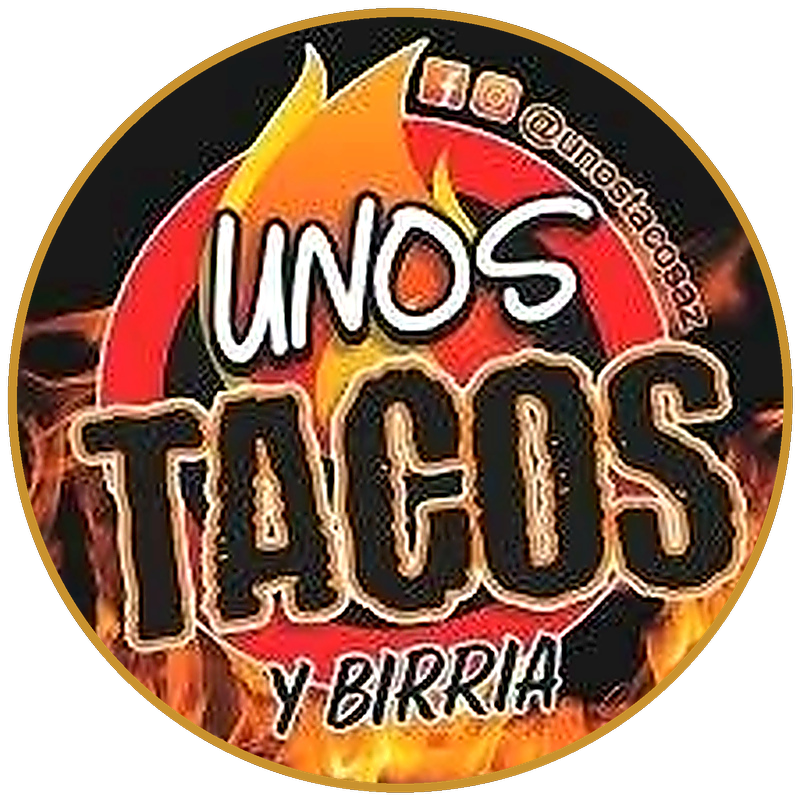
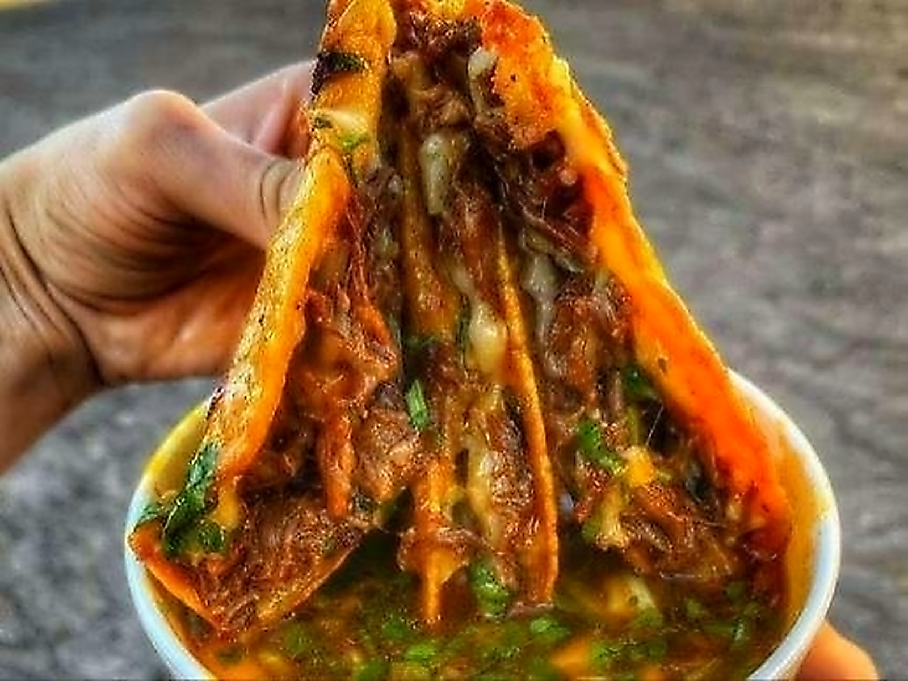
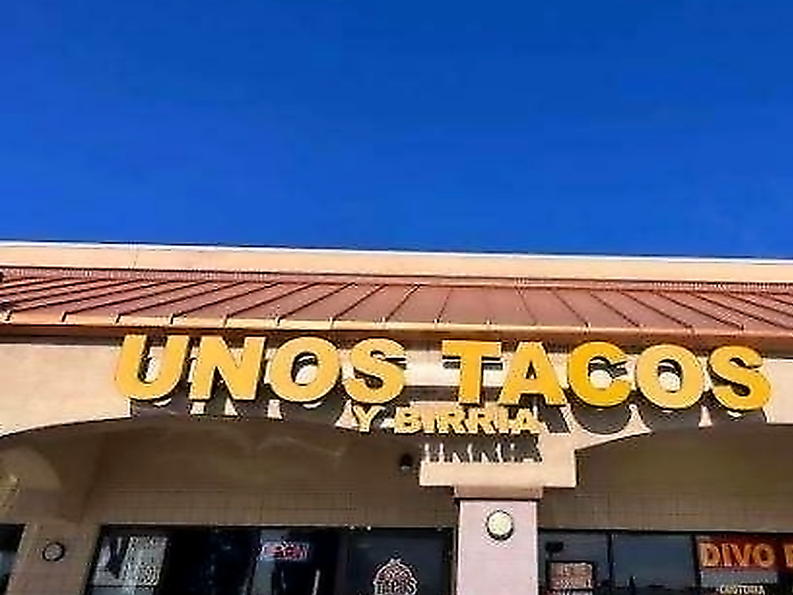
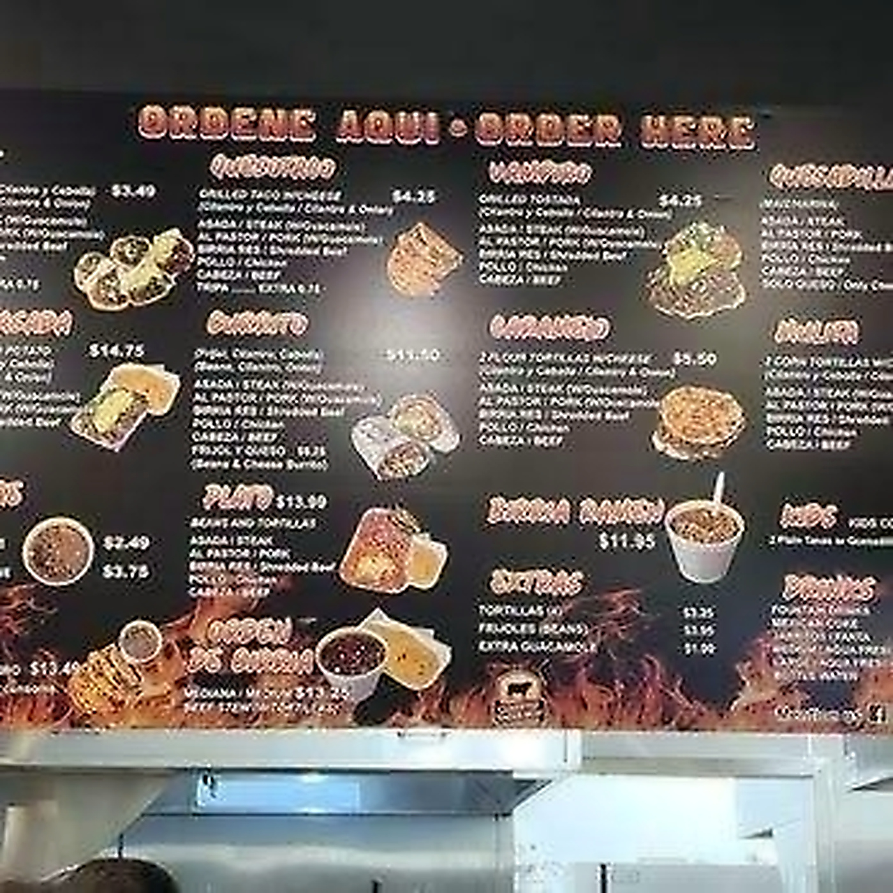
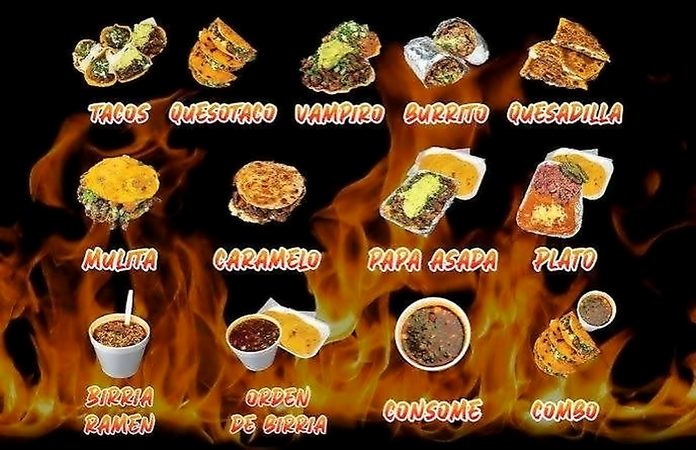
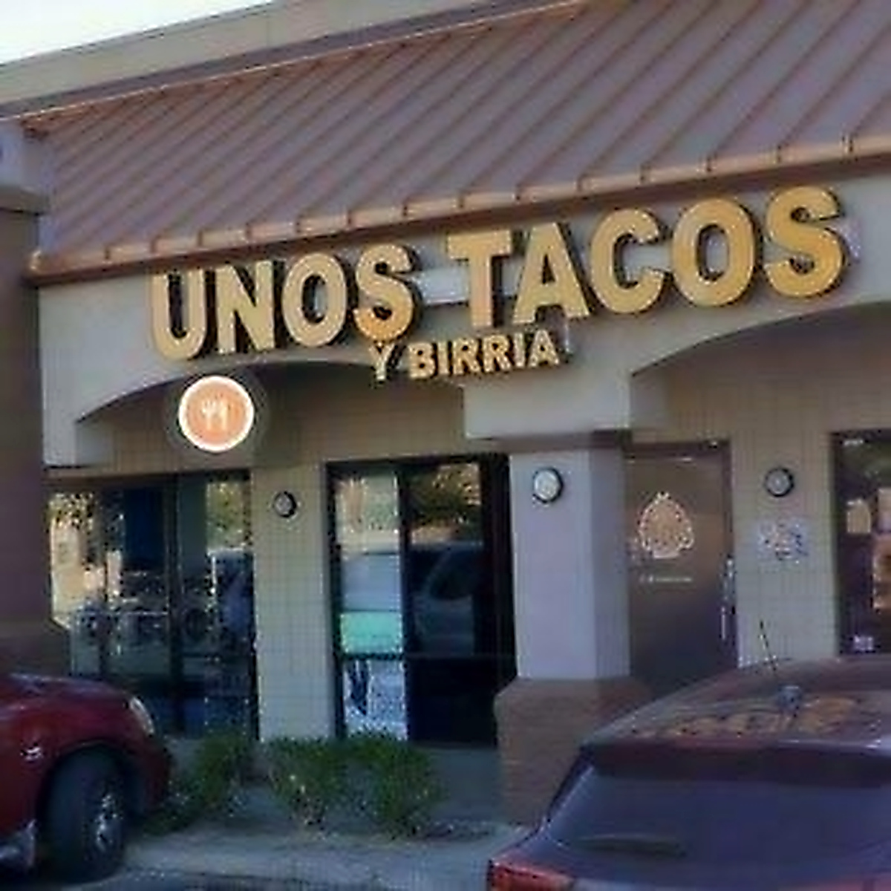

★★★★★
"Hands down the best Quesabirria tacos in Phoenix! The tortillas are handmade and crispy on the edges, and that consomé is so rich you'll drink every drop. Pair it with the Agua de Pepino con Limón!"


Step into our warm Phoenix taqueria sanctuary. 8-hour slow-braised beef birria, 100% handmade corn tortillas, steaming Birria Ramen, and soulful Tijuana, Sonora & Sinaloa flavors crafted for moments that matter.
"At UNOS TACOS Y BIRRIA, food connects with the soul — blending 8-hour scratch birria, 100% handmade corn tortillas, and authentic Tijuana, Sonora & Sinaloa warmth into our Phoenix space."
Our menu is based on authentic regional Mexican street mastery without shortcuts — featuring 8-hour guajillo-braised Beef Birria, hand-pressed corn tortillas cooked to order on the plancha, flame-kissed Sonora Carne Asada, and real fruit Aguas Frescas.
Crispy chili-dipped cheese tacos served with steaming 8-hour beef consomé
Springy ramen noodles steeped in fiery guajillo consomé & tender birria
Pressed fresh to order from nixtamalized masa and crowned with Hass guacamole
Sonora flame-crisped cheese tostadas and Tijuana double-tortilla mulitas
Sonora flour burritos, plancha tortas, and family fiesta packs for Phoenix gatherings
House-blended Pepino con Limón, Canela Horchata, Jamaica & Fresa
Every corner of UNOS TACOS Y BIRRIA is crafted to celebrate authentic Mexican street culture — from the sizzle of the plancha to ice-cold aguas frescas shared with family.
Golden Quesotacos & Fresh Cucumber Lime Agua Fresca

7502 W Thomas Rd Ste 1 — Sunny West Phoenix Landmark
Fresh-Pressed Corn Tortillas & Crushed Hass Guacamole
Steaming 8-Hour Beef Birria Ramen Bowl
Crispy Quesabirrias Ready to Dunk in Hot Consomé
Loaded Quesabirrias with House Salsas & Key Limes

Order Direct at Our Counter with 0% App Markup
Horchata, Pepino con Limón, Jamaica & Fresa
Watch handmade corn tortillas pressed and dipped into red chile consomé right on the flat-top.
Casual, family-friendly seating designed for dunking quesabirrias and sharing steaming ramen bowls.
Crisp radishes, habanero-pickled red onions, key limes, and fire-roasted salsas prepared every morning.
Call +1 (602) 281-6840 ahead and grab your hot order straight from the counter with zero wait.
Handcrafted with love, served with warmth — tap any dish to inspect how it is made or add directly to your pickup bag.
Crispy corn tortillas dipped in rich guajillo birria oil, griddled with Oaxaca cheese, and served with steaming consomé.
Build your order online and call our counter at +1 (602) 281-6840 for priority fresh pickup at 7502 W Thomas Rd.

Hosting an office lunch, birthday, or wedding? Book our live taco trays, gallon aguas frescas, and birria pans.
Open 9:00 AM to 10:00 PM Sun–Thu and until 11:00 PM Fri–Sat for hot Birria Ramen and Vampiros.

"We started with a simple dream — to bring the unmistakable street-cart soul of Tijuana, the mesquite smoke of Sonora, and the bold birria cauldrons of Sinaloa to one welcoming table in Phoenix."
Every morning before 9:00 AM at 7502 W Thomas Rd Ste 1, our kitchen comes alive with the aroma of roasted guajillo, ancho, and pasilla chiles simmering with tender beef for 8 full hours.
We press 100% handmade corn tortillas to order, crush fresh Hass avocados for real guacamole, and blend whole garden cucumbers, hibiscus, and cinnamon rice for our Aguas Frescas — never cutting corners.
Real notes from Phoenix locals who make Unos Tacos y Birria their weekly ritual.
"Hands down the best Quesabirria tacos in Phoenix! The tortillas are handmade and crispy on the edges, and that consomé is so rich you'll drink every drop. Pair it with the Agua de Pepino con Limón!"
"The Birria Ramen + Quesabirria combo is life-changing. You get a massive hot cup of spicy birria noodles loaded with tender meat plus a cheesy taco to dunk. Calling the counter directly saved us $12 vs delivery apps!"
"Authentic Tijuana & Sonora flavor right on 75th Ave and Thomas Rd. The Vampiros de Asada with real crushed guacamole and the house Horchata taste just like home."
Our flagship kitchen at 7502 W Thomas Rd Ste 1 serves Phoenix, Mesa & Avondale daily.
7502 W Thomas Rd Ste 1, Phoenix, AZ 85033, United States
Sun–Thu: 9:00 AM – 10:00 PM | Fri–Sat: 9:00 AM – 11:00 PM (MST)
$12 – $18 for one • 0% Markup on Direct Counter Orders
+1 (602) 281-6840 • unostacosaz@gmail.com
Tag us in your Quesabirria pulls and consomé dips for a chance to be featured!